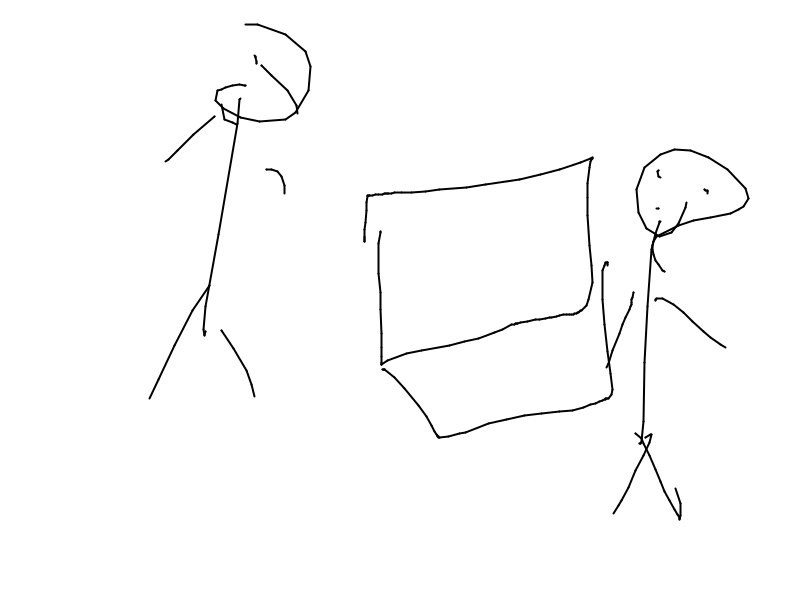

Meanwhile in another room

Apollo and Tarda were working. In secret.
Apollo: So how do you center the div again?
Tarda: Dude just set the left and right margins to auto, go watch a html tutorial or something.
Apollo: I got it, it's so funny how they don't even know we are working on Vstuck this whole time, we just have to finish the art and we'll be golden.
Tarda: Don't say it so loud they'll hear you.
Apollo: Dude this next page is good, it's gonna be Dusty and Eri speaking, so it's like we are all having different conversations at the same time.
Tarda: Just make sure it sounds natural and like them, we don't want another Gambler Pel incident.
Apollo: True that.
Zoom inGo Back